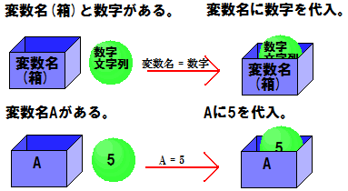

文章表示をしようpart1
文を表示させることはプログラミングを始めるにはで少し触れました。 今度は少し高度に文を表示させてみましょう。
1 2 3
text 表示したい文 endtext
text(テキスト)だとかendtext(エンドテキスト)だとか言ういきなり訳の分からない単語がでてきました。 これらは一体なんなんでしょう？ 実はこれ、文(ステートメント)と呼ばれるものなんです。 ステートメントは、コンピュータに指示を出す命令です。 コンピュータに「〜しなさい」と命令するわけです。 では、textとは一体どんな命令なんでしょう？ まぁタイトルに「文章表示をしよう」とあるくらいですから分かると思いますが、 文章を表示する命令なんです。 textとendtextの間の文章を表示します。 とりあえずコンパイルしてプレイしてみてください。 「表示したい文」と表示されると思います。
※上手くいかない人へ基本的にプログラミングは半角英数で入力を行います。
全角入力だと上手く行きません。
でも、これだけだったらtext文を使わずとも、そのまま「文章を表示しよう」 と入力すれば同じ結果が得られますよね？何故わざわざtext文を使用するのでしょうか？ 実は、text文は「文章」を表示する命令ですから、 さっきのような文を表示するプログラムの場合はtext文は必要がないんです。 さっきは「文」を表示しましたが、今度は「文章」を表示してみましょう。
1 2 3 4
text こんにちは。 今日の天気はいかがでしょう。 endtext
二行に渡って文章が表示されたと思います。 もしtextを使わないで
こんにちは。今日の天気はいかがでしょう。
とだけ入力すると、「こんにちは。」と「今日の天気はいかがでしょう。」が別々に表示されてしまいます。 そうすることが目的の場合はtext文を使用する必要はありません。
また、以下のようなことも可能です。
1 2 3 4 5 6 7 8 9 10 11 12 13 14 15 16 17 18
text 1 1行表示 endtext text 2 2行表示 endtext text 3 3行表示 endtext text 4 4行表示 endtext text 0 自動調整します。 2行目 3行目 4行目 endtext
textの後に数字を書くと、行数を指定することができます。 この様なオプションを「引数(パラメータ)」といいます。 パラメータと命令の間には半角スペースを入れる必要があります。
コメント
プログラムにメモ書きや注釈を入れたいときはコメント文が便利です。 「;(セミコロン)」を使うと、その行のそれ以降の全ての文字がコメントアウト(無視)されます。
1 2 3 4 5
; text命令を使って複数行にわたって文字を表示する。 text こんにちは。 セミコロンのテストです。 endtext ; text命令を使ったときは必ずendtextで終了する。
分かりやすいように色を変えてあります。セミコロン以降はプログラムには影響しません。
時間待ち
一定時間、処理を停止したい場合はwait(ウェイト)を使います。
フレーム数とは、1秒間に何回画面を描写するかです。 パソコンの画面はパラパラ漫画の様に1秒間に何度も画面が描写されています。 ツクアドでは初期設定でフレーム数は12になっています。 つまり、12＝1秒ですので、「wait 12」と記述すると1秒停止します。
1 2 3 4 5 6 7 8 9 10 11 12
text 0 1秒停止します。 endtext wait 12 ; 12で1秒停止 text 0 更に2秒停止します。 endtext wait 24 ; 2秒停止したい時は 12×2秒＝24 text 0 更に更に0.5秒停止します endtext wait 6 ; 0.5秒停止したい時は、1秒の半分だから 12÷2＝6
ツクアドを終了する
ツクアドを終了する時はend(エンド)を使います。
1 2 3 4 5 6 7 8 9 10 11
text こんにちは。 終了のテストです。 endtext end ; ツクアドを終了する。 text endの命令のあとなので、 実際はコレは表示されません。 endtext
文章表示をしようpart2
1 2 3
msg 文字を表示。 endtext
コンパイルして実行しましたか？ おそらく何も表示されなかったはずです。 実はこのmsgと言う命令、文章を表示した後クリック待ちをしないのです。 だから表示結果を見る前に終了してしまうのですね。 では、msgの後に時間待ちを入れてすぐに終了しないようにしてみましょう。
1 2 3 4
msg 文字を表示。 endtext wait 12 ; 1秒停止
1秒間「文字を表示。」と表示されて終了すれば成功です。 時間待ちをする命令なら、waitじゃなくてもOKです。 例えばshake(シェイク)などの命令があります。
1 2 3 4
msg 文字を表示。 endtext shake ; 文字を振動
テキストが振動するはずです。
便利な箱「変数」
プログラミングをやる上でかかせないのは変数です。 変数を使わなければ何もできないと言っても過言ではありません。
では変数とは一体なんなんでしょう？ 変数は、箱によく例えられます。 箱にはものをしまうことができますよね。 変数は数字や文字をしまっておくための箱です。 箱にものをしまう時、以下のような書き方をします。
または
です。簡単に書くと、
と、なります。 気をつけないといけないのは、「=(イコール)」は算数で使う時が意味が違うと言うことです。 算数では右側と左側の数字が同じと言う意味ですが、 プログラミングでは左側に右側の物を代入すると言う意味になります。
1 2
; 変数の使い方 A = 5 ; 変数名(Aと言う名前の箱)に数字(5)を代入
Aに5を代入しました。 変数に何か代入して物が入っている状態にすることを変数を定義すると言います。 つまりAと言う変数(箱)に5(物)と言う数字が入っていることになります。
箱の中身を見る時は、「$(ダラー)」で変数を囲みます。
1 2
A = 5 ; 変数名(Aと言う名前の箱)に数字(5)を代入 変数Aの中身は$A$です。 ; $で囲むと表示
実行すると「変数Aの中身は5です。」と表示されるはずです。 代入する値を変えて色々試してみてください。 文字を入れる場合は「"(ダブルクオーテーション)」で囲みます。
1 2
A = "ハンバーグ" ; 変数Aに「ハンバーグ」を代入 好きな食べ物は$A$です。
変数の名前はAじゃなくて好きな名前でも大丈夫です。 ただし、半角で。 ツクアドの場合全角文字でも可能ではあるのですが、 他の言語に移行した場合や見易さを考えるとお勧めはしません。
1 2 3 4 5 6 7 8
abc = 5 ; abc に 5 を代入 f = 6 ; f に 6 を代入 F = 9 ; F に 9 を代入 text abcは$abc$ fは$f$ Fは$F$ endtext
大文字と小文字では、別の変数として扱われます。 また、
1 2 3
a = 15 a = 20 aは$a$
このようにするとどうなるでしょうか。 最初に15を代入した後に20を代入しています。 実は、最初に代入した15は綺麗サッパリ忘れられてしまいます。 変数には一番最後に代入した値が残るんですね。
では変数を定義しないとどうなるでしょうか。
1
$a$ ; 変数aを定義しないで表示
おそらく実行すると、undefined(アンディファインド)と表示されます。 undefinedは未定義と言う意味です。 未定義の変数をプログラムで使うとバグの原因となります。 注意して下さい。
変数の名前は分かりやすくつけましょう。 例えば名前を入れる変数ならば、
name = "ネーム"
年齢を入れる変数ならば、
age = 16
などがベストです。 変数の名前のつけ方には決まりがあります。 変数の名前の最初に数字が来ては駄目です。
良い例
a2 = 6
悪い例
2a = 6
さまざまな計算
コンピュータは日本語では「電子計算機」と言います。もともと計算をするために作られた装置なんです。 だから計算は大得意なんです。 パソコンに計算しろとツクアドから命令を出すには以下のように書きます。
1 2 3 4 5 6
A = 90 ; Aに90を代入 A + 10 ; 90に10を足したので100 A / 2 ; 100を2で割ったので50 A - 10 ; 50から10を引いたので40 A * 3 ; 40に3をかけたので120 Aの値は$A$です。
注意しなければならないのは、掛け算は「*(アスタリスク)」、割り算は「/(スラッシュ)」を使う点です。 間違って「×」「÷」を使わないようにしましょう。
にしてもこの計算、何行も場所をとるし、書くときも面倒くさいと思いませんか？ 実は、この計算は1行で書くことができます。
1 2
A < ( ( 90 + 10 ) / 2 - 10 ) * 3 Aの値は$A$です。
「=(イコール)」が「<(レスザン,小なり)」になっただけで、あとは普通に計算式を書くだけです。 計算の優先順位は「掛け算、割り算」「足し算、引き算」の順番ですので、「()(丸カッコ,パーレン)」で囲って順番を変えましょう。 ただし、「{}(中カッコ、ブレイス)」は使用できません。
もちろん、計算式に変数を含めることも可能です。
1 2 3 4
A = 20 B = 30 C < ( A + B ) / 2 $A$と$B$の平均値は$C$です。
基本的な計算はマスターできたのではないでしょうか？
ここで気をつけなければならないのは、未定義の値を使って計算した場合です。
$a$
このようなプログラムを書くと、aの値はNan(ナン)となります。 また、文字を含む不正な計算
b = "あ"
a * b
$a$
でも同じことが言えます。 ただし、計算方法が変数同士の「<」を使わない足し算の場合のみ正常な結果が得られます。
b = "円"
a + b
$a$
500円、と表示されます。
もし〜ならば
プログラムを書いていると「こう言う場合はああして」「ああ言う場合はこうして…」など、 状況によって実行結果を変えたい場合が出てくると思います。 そんなときに使うのがif(イフ)文です。
ブロック(やりたいこと)
endif
このように書きます。 条件式とは、 もし〜ならば、の「〜」の部分です。 例えば、もし「変数var0の値が1」ならば、など。 これを条件式として書くと「var0 = 1」です。
1 2 3 4 5 6 7
var0 = 1 if var0 = 1 then ; var0と1を比較。var0が1ならif〜endifまでを処理する。 var0は1です。 endif if var0 = 2 then ; var0と2を比較。var0が2ならif〜endifまでを処理する。 var0は2です。 endif
実行すると「var0は1です。」と表示されます。 このように、条件式が正しいとき、この条件式が「真(しん)」であるといいます。 逆に、この条件式が正しくないときは、条件式が「偽(ぎ)」であるといいます。 この場合、「if var0 = 1 then」が真で「if var0 = 2 then」が偽です。
ひとつ注意すべきは、文字列の比較はできないことです。 つまり、
str0 = "いちご" if str0 = "いちご" then str0はいちごです。 endif
と言うプログラムの条件式は常に偽です。 現時点で文字列の比較はできないので、ツクアドがヴァージョンアップするまで待ちましょう。
先ほど、条件式にイコールを使いましたが、それ以外にも以下のようなものが使用可能です。
| 比較演算子 | |
| = | 左辺と右辺が同じ |
| <= | 左辺が右辺以下 |
| < | 左辺が右辺より小さい |
| >= | 左辺が右辺以上 |
| > | 左辺が右辺より大きい |
| != | 左辺と右辺が等しくない |
例を挙げますと、
1 2 3 4 5 6 7 8 9 10 11 12 13 14
var0 = 50 var1 = 100 if var0 < var1 then text var0はvar1よりも小さい $var0$<$var1$ endtext endif if var0 >= var1 then text var0はvar1以上 $var0$>=$var1$ endtext endif
こんなことが可能です。
また、else(エルス)と言う命令も便利です。 elseは「他に」といった意味で、条件式に当てはまらないものを実行します。
1 2 3 4 5 6 7 8 9 10 11 12 13
var0 = 6 if var0 = 5 then var0は5です。 else var0は5以外です。 endif var1 = 5 if var1 <= 10 then var1は10以下です。 else var1は10より大きいです。 endif
RPGなどのキャラクターが生きているかどうかの判別も、これで出来ますね。
1 2 3 4 5 6 7 8
HP = 25 ; HPを25に設定 damage = 30 ; ダメージ HP - damage ; 喰らったダメージをHPから引く if HP <= 0 then 死んだ end endif 耐えた
ところで、if文で沢山の場合分けをしたい場合どうしますか？ わざわざ
if A = 0 then Aは0 endif if A = 1 then Aは1 endif if A = 2 then Aは2 endif
としますか？ この作業はとても面倒な上にミスも多くなります。ハッキリ言って効率が悪いです。 こういう場合はelse if(エルスイフ)が便利です。
1 2 3 4 5 6 7 8 9 10
B = 1 if B = 0 then Bは0です。 else if B = 1 then Bは1です。 else if B = 2 then Bは2です。 else Bは0でも1でも2でもありません。 endif
とても便利ですね。 endifは一番最後にのみつけます。 そうしないとエラーになります。 さて、今回if else文に使う変数は全て同じ変数(B)でした。 ではこのようにしたらどうなるでしょうか。
1 2 3 4 5 6 7 8 9 10
A = 5 B = 6 C = 7 if A = 4 then Aは4です。 else if B = 6 then Bは6です。 else if C = 7 then Cは7です。 endif
一番最初にもしAが4ならば、と言う条件文があります。 しかしAは5なので無視されますね。 次に、他にもしBが6ならば、と言う条件文があります。Bは6です。 よってこれは実行されます。 さて、次はどうなるでしょう。 もしCが7ならば、と言う文があります。Cは7です。Cは実行…されません。 実は、else文にした場合実行されるのはelse文のなかからひとつだけなのです。 よってCは真なのに実行されないという不思議な現象が起こります。
つまり作りたいプログラムによって、以下のように書き分けることが必要です。
↓全てが実行されるパターン
1 2 3 4 5 6 7 8 9 10 11 12
A = 1 B = 1 C = 1 if A = 1 then A:$A$ endif if B = 1 then B:$B$ endif if C = 1 then C:$C$ endif
↓if A = 1 thenのブロックのみが実行されるパターン
1 2 3 4 5 6 7 8 9 10
A = 1 B = 1 C = 1 if A = 1 then A:$A$ else if B = 1 then B:$B$ else C:$B$ endif
間違えないように気をつけましょう。こういう区別をあやふやにしておくと思わぬところでバグが発生するかもしれません。
選択肢！
選択肢を表示し、プレイヤーに選択肢の中から選ばせるにはmenu(メニュー)を使います。
menu 変数名 選択肢A 選択肢B 選択肢C 選択肢D . . endmenu
と言ったような書き方をします。
選択肢Aを選ぶと変数名に0が代入されます。
選択肢Bを選ぶと変数名に1が代入されます。
選択肢Cを選ぶと変数名に2が代入されます。
選択肢Dを選ぶと…
といった仕組みになっています。
サンプルを見てみましょう。
1 2 3 4 5 6 7
menu m0 たたかう ; これを選択するとm0に0が代入されます。 まほう ; これを選択するとm0に1が代入されます。 どうぐ ; これを選択するとm0に2が代入されます。 にげる ; これを選択するとm0に3が代入されます。 endmenu あなたは$m0$番目を選択しました。
注意しないといけないのは、代入される値は0から始まることです。 またendmenuをつけないとエラーになります。
menuとifを使って、選択肢に応じた結果を表示してみましょう。
1 2 3 4 5 6 7 8 9 10 11 12 13 14 15 16 17
msg 0 あなたが好きな食べ物は？ endtext menu tabemono ハンバーグ ラーメン キャビア endmenu if tabemono = 0 then 僕もハンバーグ大好きだよ！ else if tabemono = 1 then アツアツのラーメンはおいしいよね！ else if tabemono = 2 then 本当に食べたことあるの？？ endif
ifの使い方さえ知っていれば簡単ですね。